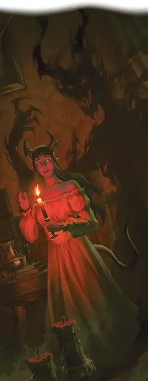

Живая тень
Living Shadow
Черта Тёмного дара (Требования: кампания в Равенлофте)

Отбрасываемая вами тень всегда рядом и живёт своей жизнью, порой даже действуя по собственной воле. Вы получаете следующие преимущества:
Цепкая тень. Вы изучаете заговор Волшебная рука и можете сотворять его без предоставления компонентов. Заклинательная характеристика для этого заклинания — Интеллект, Мудрость или Харизма (выберите при получении черты).
Удлинённый выпад. Когда вы в ваш ход совершаете бросок рукопашной атаки частью действия Атака или Магия, можете увеличить досягаемость этой атаки на 10 футов: ваша тень вытягивается, помогая вам нанести удар. Вы можете использовать эту способность количество раз, равное вашему Бонусу владения, и вы восстанавливаете все потраченные использования по завершении Долгого отдыха.
Зловещая воля. Сразу после того, как при совершении вами Теста к20 на к20 выпадает «1», ваша тень пытается навязать вам собственную волю. Совершите спасбросок Мудрости (Сл 13 + ваш Бонус владения). При провале вы Недееспособны до начала вашего следующего хода; в начале вашего следующего хода совершите бросок по таблице «Воля тени», чтобы определить ваше поведение в этом ходу.
Воля тени
| 1d8 | Поведение |
| 1 | Вы не совершаете действий и Бонусного действия и используете всё своё перемещение для движения в направлении, определяемом броском 1к4: 1 — восток; 2 — юг; 3 — север; 4 — запад. |
| 2–6 | Вы не двигаетесь и не совершаете Бонусного действия; вы совершаете действие Атака, делая одну рукопашную атаку против случайного существа в пределах досягаемости. Если в пределах досягаемости нет существ, вы не совершаете действий. |
| 7–8 | Вы Опрокидываетесь, и ваш ход оканчивается. |